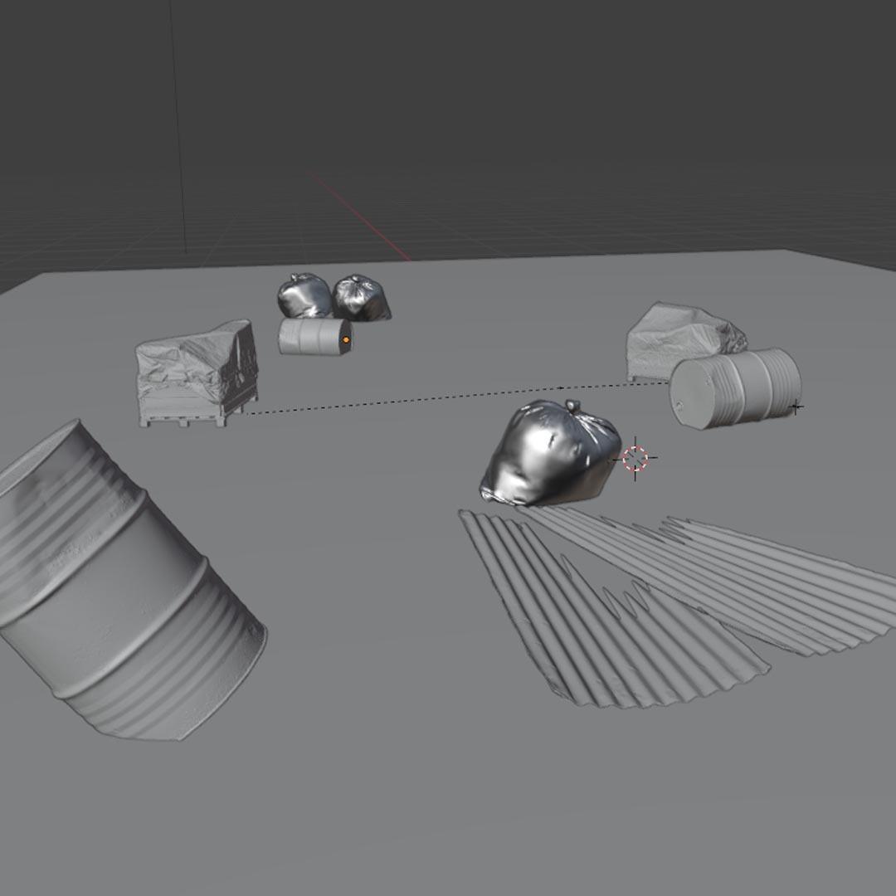
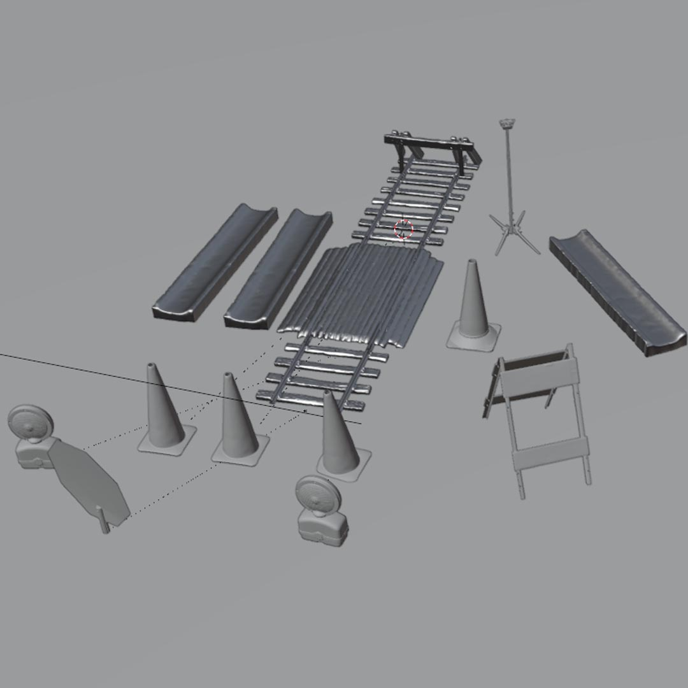
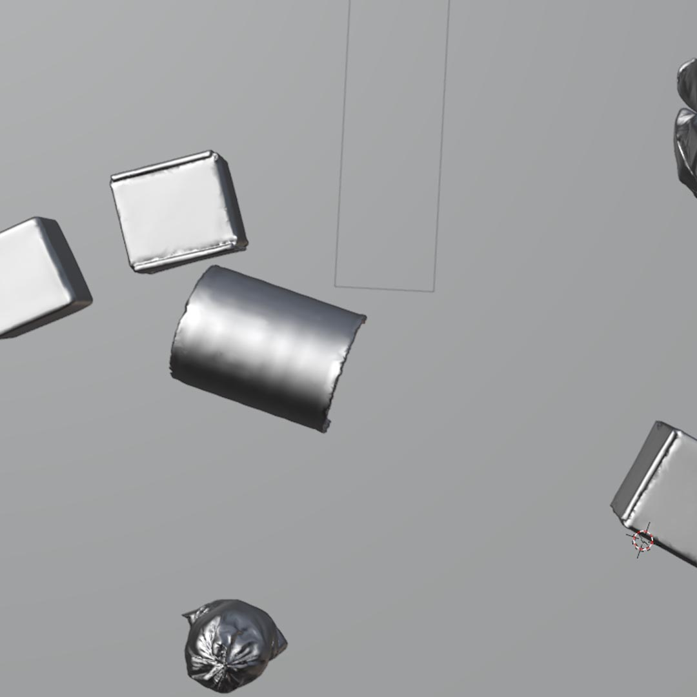
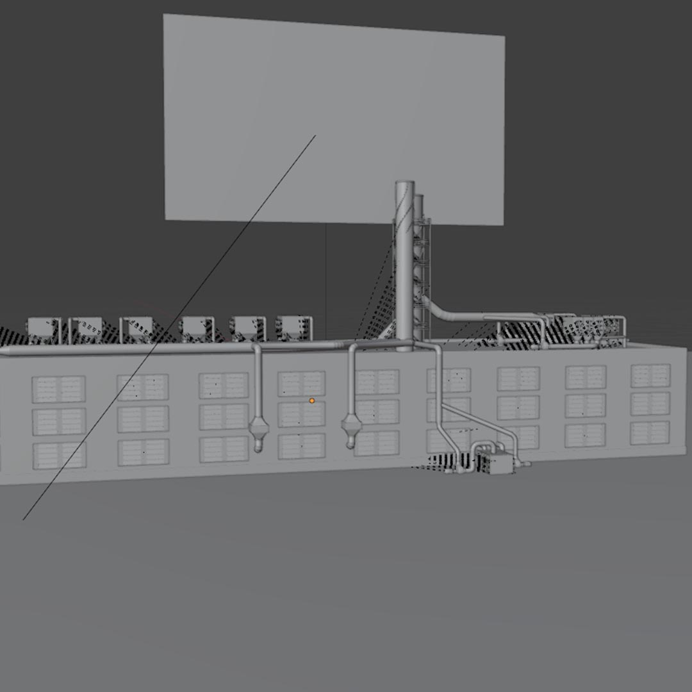

Documental ambiental · VFX · Animación
Adopta un Frailejón
Una pieza documental que combina tomas live action, animación y efectos visuales para construir una narrativa sensible sobre los páramos, su fragilidad y la necesidad urgente de protegerlos.
Concepto
Lo natural y lo digital se encuentran para hablar del cuidado
El proyecto explora el frailejón como símbolo de vida en los ecosistemas de alta montaña. La intervención visual permite acentuar texturas, ritmos y atmósferas para acercar al espectador a una lectura emocional del paisaje.
Secuencias visuales
Animación y VFX


Proceso
Exploraciones gráficas



